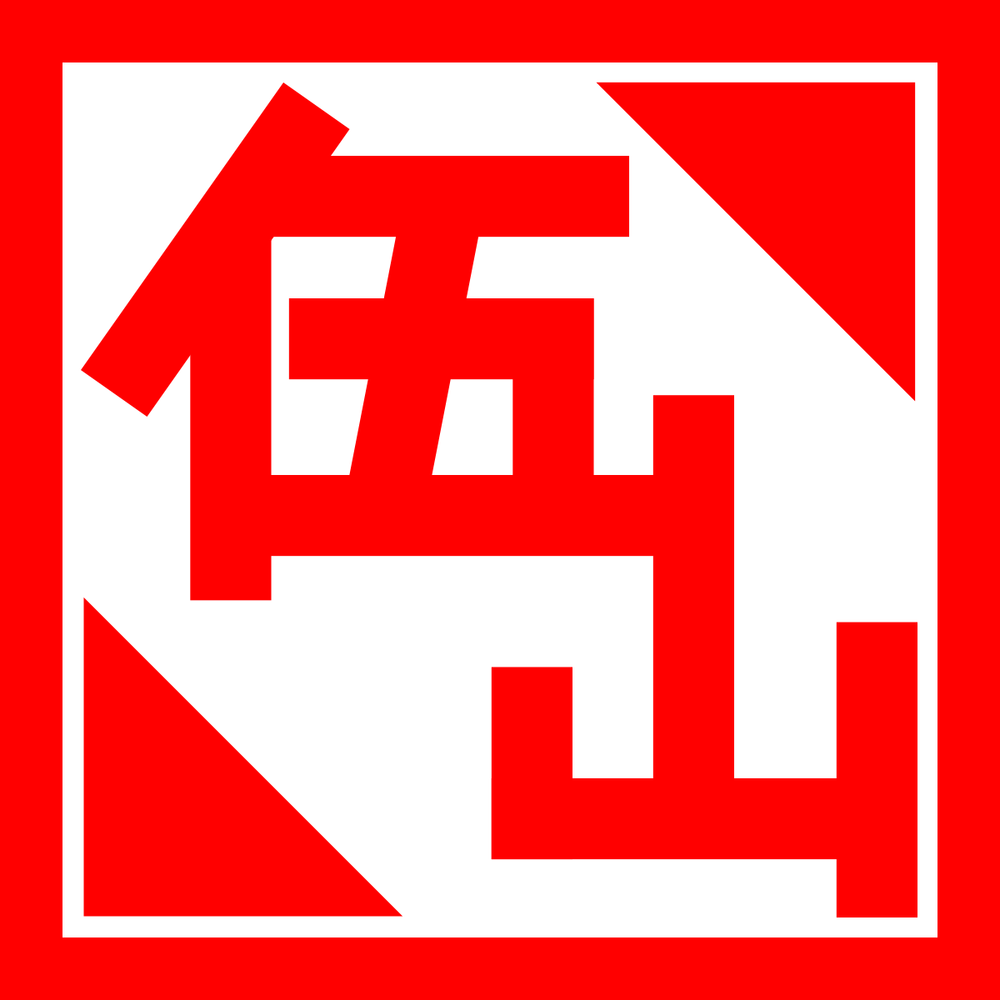

Well-rounded creator with experience in graphic design, UX design, and video editing. Graduate of University of Southern California with a BA in East Asian Languages and Culture and a minor in marketing as well as a certificate in UX/UI from University of California, Irvine. Highly adaptable learner and team player who always looks to accomplish tasks in the most efficient manner.
In a nod to my heritages, the logo is meant to be reminiscent of Chinese seal stamps you find on official documents or artwork. The two characters in there read out as “Five Mountains” which is a portmanteau reading of my Chinese surname and the first character in my Japanese surname. In Chinese culture, the color red represents good fortune, happiness, and prosperity; things I hope to share through my creative work regardless of which medium I am working in.